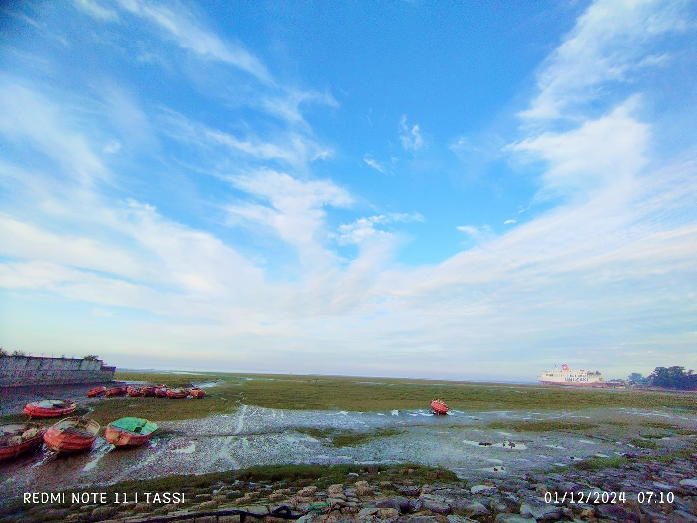

I am an enthusiastic and dedicated back-end full-stack developer with a passion for technology and digital solutions.
With a strong background in IT, data analysis, social media management, and graphic design, I am committed to delivering innovative and efficient solutions.
My expertise in leadership, teamwork, and project management allows me to thrive in dynamic work environments.
I aim to contribute to organizations by leveraging my technical and analytical skills while continuously learning and growing in my career.
A renowned management consultant, educator, and author Peter Drucker
said:
"The ability to learn is one of the most powerful things you can do. No matter what field or subject you choose to master, your capacity to grow and develop is unlimited."

IIML (Jan 2024 - May 2024)
IIML WebsiteEPSF (Aug 2022 - Oct 2023)
EPSF WebsiteEPSF (Mar 2021 - Jul 2022)
EPSF WebsiteGuzel.bd (Feb 2020 - Mar 2021)
Guzel.bd Facebook Page• Kamil (MA) | Hadith (Islamic Arabic University, Dhaka) 2024-Present
• Fazil (BA) | BTIS (Islamic Arabic University, Dhaka) 2018-2019
• Alim (HSC) | General (Tamirul Millat Kamil Madrasah, Tongi Branch) 2018
• Dakhil (SSC) | General (Jamea Quasemia Kamil Mohila Madrasah) 2016

Tasnia Tamanna from Instagram. Posted in 2025
| SL. | Course Name | Institute Name | Address | Year |
|---|---|---|---|---|
| 01. | Full-Stack Web Development | Shikhbe Shobai | Dhaka | Running |
| 02. | MS PowerPoint Advanced Course | GP Academy | Dhaka | 2023 |
| 03. | MS PowerPoint Advanced Course | GP Academy | Dhaka | 2023 |
| 04. | Visual Identity Graphic Design | GP Academy | Dhaka | 2023 |
My ambition is to become a proficient Full-Stack Developer capable of creating impactful digital solutions.
I am eager to collaborate with innovative teams, contribute my skills, and continuously expand my knowledge in the ever-evolving field of technology.
Whether it's through web development, IT management, or digital marketing, my goal is to help businesses and individuals enhance their online
presence and streamline operations with cutting-edge solutions.
Let's connect and create something amazing together!
"Indeed, with hardship comes ease." (Quran 94:6) Be patient; success will shine bright. Allah’s mercy has no end. Trust in Him; all will be right.
Click to play button

Kumira Beach (clicked by-Tasnia Tamanna)
-Golden rays, salty breeze and endless blue- the perfect coastal morning.
Kumira Beach-Tap to see more about Kumira Beach and contact to travel here.
Written by----- The HTML background-color I use in this project name is "floralwhite"